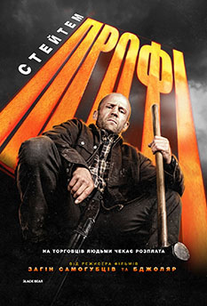

Вікові обмеження: 16+
Рік: 2025
Оригінальна назва: A Working Man
Режисер: Девід Ейєр
Рейтинг глядачів: 6
Рейтинг критиків: 50%
Мова: українська мова
Жанр: Трилер, Екшн, Бойовик
Тривалість: 1:56
Виробництво: США
Студія: Black Bear, BlockFilm, CAT5, Cedar Park Entertainment, Punch Palace Productions, Balboa Productions
Сценарій: Сільвестр Сталлоне